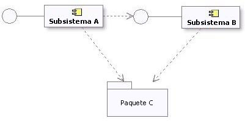
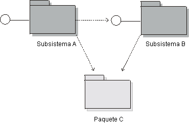

|
Los subsistemas se pueden utilizar en una serie de modos
complementarios, para partir el sistema en unidades que
-
se pueden ordenar, configurar o entregar independientemente,
-
se puede desarrollar independientemente, siempre que las interfaces no se cambien
-
se pueden desplegar independientemente a través de un conjunto de nodos computacionales distribuidos
-
se pueden cambiar independientemente sin romper otros componentes de los sistemas
Por lo tanto, los subsistemas son ideales para modelar componentes - unidades de ensamblaje reemplazables en el
desarrollo basado en componentes - mayores que una única clase de diseño.
Además, los subsistemas pueden
-
partir el sistema en unidades que pueden proporcionar una seguridad restringida en los recursos clave
-
representar los productos existentes o los sistemas externos en el diseño.
Una clase de análisis compleja se correlaciona con un subsistema de diseño si parece que personifica el comportamiento
que no puede ser responsabilidad de una única clase de diseño que actúe sola. Una clase de diseño compleja también se
puede convertir en un subsistema, si es probable que se implemente como un conjunto de clases de colaboración.
Los subsistemas también son medios adecuados para identificar las partes del sistema que debe desarrollar de modo
independiente un equipo separado. Si los elementos de diseño de colaboración se pueden contener completamente en un
paquete junto con sus colaboraciones, un subsistema puede proporcionar un formato de encapsulación más eficaz que el
que ofrece un simple paquete. El contenido y las colaboraciones de un subsistema se aíslan por completo detrás de una o
más interfaces, de modo que el cliente del subsistema sólo depende de la interfaz. Así, el diseñador del subsistema
está aislado por completo de las dependencias externas; el diseñador (o el equipo de diseño) debe especificar el modo
en el que se ha realizado la interfaz, pero puede cambiar libremente el diseño del subsistema interno sin que afecte a
las dependencias externas. En sistemas grandes con equipos de gran independencia, este nivel de desacoplamiento
combinado con la imposición de la arquitectura que ofrecen las interfaces formales constituye un argumento convincente
para la elección de subsistemas mejor que paquetes simples.
El subsistema de diseño se utiliza para encapsular las colaboraciones de modo que los clientes del subsistema puedan
ignorar por completo el diseño interno del subsistema, incluso cuando utilicen los servicios que ofrece el subsistema.
Si las clases/subsistemas participantes en una colaboración sólo interactúan entre sí para producir un conjunto de
resultados bien definido, la colaboración y sus elementos de diseño de colaboración se deben encapsular dentro de un
subsistema.
Esta regla también se puede aplicar a subconjunto de colaboraciones. En cualquier lugar se puede encapsular y
simplificar todo o parte de una colaboración. Al hacerlo, se simplifica la comprensión del diseño.
Sugerencias
Sugerencia
|
Detalles
|
|
Condiciones de opcional
|
Si una colaboración (o subcolaboración) concreta representa comportamiento opcional, inclúyala en un
subsistema. Las características que se pueden eliminar, actualizar o reemplazar con alternativas se
deben considerar como independientes.
|
|
Condiciones de la interfaz de usuario del sistema
|
Si la interfaz de usuario es relativamente independiente de las clases de entidad del sistema (es
decir, ambas se pueden y se cambian de modo independiente), cree subsistemas que se integren de modo
horizontal: agrupe las clases de límite de interfaz de usuario relacionadas juntas en un subsistema, y
agrupe las clases de entidad relacionadas juntas en otro subsistema.
|
|
Si la interfaz de usuario y las clases de entidad que muestra están estrechamente acopladas (es decir,
un cambio en una de ellas desencadena un cambio en la otra), cree subsistemas que se integren de modo
vertical: incluya las clases de entidad y de límite relacionadas en un subsistema común.
|
|
Condiciones de los actores
|
Separe la funcionalidad que utilizan dos actores diferentes, puesto que cada actor puede cambiar
independientemente sus requisitos en el sistema.
|
|
Cree subsistemas para incluir el acceso a un dispositivo o sistema externo.
|
|
Condiciones del acoplamiento y la cohesión entre elementos de diseño
|
Las clases/subsistemas altamente acoplados o unidos colaboran para facilitar algún conjunto de
servicios. Organice los elementos altamente acoplados en subsistemas y separe los elementos a lo largo
de líneas de acoplamiento débil. En algunos casos, el acoplamiento débil se puede eliminar por completo
dividiendo las clases en clases más pequeñas con responsabilidades más cohesivas, o bien, repartiendo
subsistemas del modo adecuado.
|
|
Condición de sustitución
|
Si se han especificado varios niveles de servicio para una posibilidad determinada (por ejemplo: alta,
media y baja disponibilidad), represente cada nivel de servicio como un subsistema separado. Cada uno
de ellos realizará el mismo conjunto de interfaces. De este modo, los subsistemas se pueden sustituir
entre sí.
|
|
Condición de distribución
|
Aunque
puede haber varias instancias de un subsistema concreto y ejecutarse cada una de ellas en nodos
diferentes, en muchas arquitecturas una única instancia de un componente no se puede dividir entre
nodos. En los casos en los que el comportamiento del subsistema se debe dividir entre nodos, se
recomienda descomponer el subsistema en subsistemas más pequeños (representando cada uno de ellos un
solo componente) con funcionalidad más restringida.
Determine la funcionalidad que debe residir en cada nodo y cree un nuevo subsistema para que sea el
"poseedor" de dicha funcionalidad, y distribuya las responsabilidades y los elementos relacionados del
subsistema original del modo adecuado.
Los nuevos subsistemas son internos del subsistema original.
|
Una vez que haya organizado el diseño en subsistemas, actualice las realizaciones de los guiones de uso según proceda.
Los subsistemas de diseño se modelan utilizando componentes UML. Dicha construcción ofrece las posibilidades de
modelado siguientes:
-
puede agrupar clases para definir una parte de granularidad más grande de un sistema
-
puede separar las interfaces visibles de la implementación interna
-
puede tener instancias que se ejecuten en el tiempo de ejecución
Otras consideraciones son:
-
Se debe haber dado un nombre y una descripción corta a cada subsistema de diseño.
-
Las responsabilidades de la clase de análisis original se deben transferir al subsistema recién creado, utilizando
la descripción del subsistema para documentar las responsabilidades.
Nota: UML 2.0 también define un estereotipo para el componente denominado <<subsystem>>, que indica que
también se puede utilizar, por ejemplo, para representar estructuras a gran escala. Un subsistema de diseño RUP puede
ser o no una estructura a gran escala; ambos son subsistemas de diseño desde la la perspectiva RUP. Es una cuestión que
debe decidir el arquitecto de software (por ejemplo, si se deben elegir la etiqueta de <<subsystem>> para
los componentes que están compuestos de componentes).
Cuando un producto existente exporta interfaces, es decir, operaciones (y, quizá recepciones), pero de lo contrario mantiene ocultos todos los detalles de la
implementación, se puede modelar como un subsistema en la vista lógica. Los ejemplos de productos que el sistema
utiliza que puede representar con un subsistema incluyen:
-
Software de comunicación (middleware).
-
Soporte de acceso a base de datos (soporte de correlación RDBMS).
-
Productos específicos de la aplicación.
Algunos productos existentes como, por ejemplo, recopilaciones de tipos y estructuras de datos (por ejemplo, pilas,
listas o colas) se pueden representar mejor como paquetes, puesto que revelan algo más que el comportamiento. Lo
importante y útil es el contenido concreto del paquete no el paquete en sí mismo que es, simplemente, un contenedor.
Programas de utilidad comunes como, por ejemplo, bibliotecas de matemáticas, se puede representar como subsistemas si,
simplemente, exportan interfaces, pero depende del criterio del diseñador sobre la naturaleza de la cosa modelada
considerar si es necesario o tiene sentido. Los subsistemas son construcciones orientadas a objetos (puesto que
son componentes modelados): un subsistema puede tener instancias (si el diseñador así lo indica). UML proporciona otro
modo para modelar grupos de procedimientos y variables globales en el programa de
utilidad, que es un estereotipo de clase - el programa de utilidad no tiene instancias.
Al definir el subsistema para representar el producto, también se deben definir una o más interfaces para representar
las interfaces del producto.
Los subsistemas de diseño (modelados como componentes UML) se diferencian de los paquetes por la semántica: un
subsistema proporciona comportamiento a través de una o más interfaces que realiza. Los paquetes no pueden proporcionar
ningún comportamiento; simplemente, son contenedores de cosas que proporcionan comportamiento.
El motivo para utilizar un subsistema en lugar de un paquete es que los subsistemas encapsulan el contenido, y
proporcionan comportamiento sólo a través de sus interfaces. La ventaja de ello es que, a diferencia de los paquetes,
el contenido y los comportamientos internos del subsistema se pueden cambiar con total libertad mientras las interfaces
del subsistema permanezcan constantes. Los subsistemas también proporcionan un elemento de "diseño reemplazable": dos
componentes cualquiera de <<realization>> que realicen las mismas interfaces (o componente de
<<specification>>) se pueden intercambiar.
Con el objeto de garantizar que los subsistemas son elementos reemplazables en el modelo, se deben imponer dos reglas:
-
Un subsistema debe minimizar la exposición de su contenido. Lo más adecuado es que ninguno de los elementos que
contiene el subsistema tenga visibilidad 'public', de modo que ningún elemento de fuera del subsistema dependa de
la existencia de un elemento particular que se encuentre dentro del subsistema. A continuación se indican algunas
excepciones:
-
En algunas tecnologías, los elementos externos de un subsistema no se pueden modelar como una interfaz UML.
Por ejemplo, una interfaz Java se modela como una clase estereotipada.
-
Es posible que el diseño del subsistema requiera que se expongan clases en lugar de interfaces UML. Por
ejemplo, se puede utilizar una clase "delegado" o "acceso" para ocultar una colaboración compleja de otras
clases. Mientras que en su lugar se podría utilizar un paquete corriente, se puede usar un subsistema con
el objeto de enfatizar el intento de encapsular comportamiento y ocultar detalles internos.
-
Cuando los elementos externos de un subsistema no son interfaces UML, con frecuencia resulta útil disponer de un
diagrama (denominado, por ejemplo "Vista externa") que muestre los elementos visibles del subsistema.
-
Un subsistema debe definir sus dependencias en interfaces de subsistema (y elementos del subsistema visibles
públicamente en los casos excepcionales descritos más arriba). Además, varios subsistemas pueden compartir un
conjunto de interfaces o definiciones de clase en común, en cuyo caso dichos subsistemas "importan" el contenido de
los paquetes que contienen elementos comunes. Es más común con paquetes en las capas inferiores de la arquitectura,
a fin de garantizar que las definiciones de clases comunes que deben pasar entre subsistemas se definan de modo
coherente.
Más abajo se muestra un ejemplo de las dependencias del subsistema y el paquete:

Dependencias del subsistema y el paquete en el modelo de diseño
El UML ([UML04]) especifica que:
Existen varios estereotipos estándar UML que se aplican al componente, por ejemplo, <<specification>> y
<<realization>>, para modelar componentes con definiciones de especificación y realización diferentes,
donde una especificación puede tener varias realizaciones.
Un componente estereotipado por <<specification>> especifica un dominio de objetos sin definir la
implementación física de dichos objetos. Sólo tiene interfaces proporcionadas y obligatorias y no está destinado a
tener ningún subcomponente ni clase de realización como parte de su definición.
Un componente estereotipado por <<realization>> especifica un dominio de objetos, lo que también define
la implementación física de dichos objetos. Por ejemplo, un componente estereotipado por
<<realization>> sólo tiene subcomponentes y clases de realización que implementan el comportamiento que
especifica un componente <<specification>> separado.
Básicamente, la separación de especificación y realización permite dos descripciones separadas del subsistema. La
especificación sirve como un contrato que define todo lo que el cliente necesita para saber cómo utilizar el
subsistema. La realización es el diseño interno detallado cuya finalidad es guiar al implementador. Si desea ofrecer
soporte para varias realizaciones, cree subsistemas de "realización" separados y arrastre una realización de cada
subsistema de realización al subsistema de especificación.
Si el comportamiento y el estado interno del subsistema es relativamente sencillo, es posible que sólo deba especificar
las interfaces expuestas, diagramas de estado para describir el comportamiento y texto descriptivo del subsistema.
Para comportamientos y estados internos más complejos, se pueden utilizar clases de análisis para especificar el
subsistema con un alto nivel de abstracción. Para grandes sistemas de sistemas, la especificación de un subsistema
también puede incluir guiones de uso. Consulte el apartado Desarrollo de sistemas a gran escala con Rational Unified Process.
Proporcionar una especificación detallada separada de la realización suele ser de gran utilidad en las situaciones
siguientes:
-
el comportamiento o el estado interno de la realización del subsistema son complejas, y la especificación se debe
expresar del modo más sencillo posible a fin de que los clientes la utilicen de modo eficaz.
-
el subsistema es un "componente de ensamblaje" reutilizable, destinado al ensamblaje en varios sistemas (consulte
el apartado Concepto: Componente);
-
se espera que una organización separada desarrolle las cualidades esenciales del subsistema;
-
se deben crear varias implementaciones del subsistema;
-
se espera que el subsistema se reemplace con otra versión que tenga cambios internos significativos, pero sin
cambios en el comportamiento visible externamente.
No obstante, el mantenimiento de una especificación separada requiere cierto esfuerzo, puesto que se debe garantizar
que la realización del subsistema satisface la especificación. Los criterios con respecto a cuándo y si se deben crear
colaboraciones y clases de realización y especificación separadas se deben definir en el apartado Producto de trabajo: Directrices específicas del proyecto.
Un especificación debe definir sus dependencias. Se trata de interfaces y elementos visibles desde otros paquetes y
subsistemas que deben estar disponibles en todas las realizaciones compatibles del subsistema.
Una realización puede tener dependencias adicionales, que especifica el diseñador o implementador. Por ejemplo, es
posible que exista la oportunidad de utilizar un componente de programa de utilidad para simplificar la implementación,
pero la utilización de dicho componente de programa de utilidad es un detalle que no se debe exponer a los clientes.
Estas dependencias adicionales se deben capturar en un diagrama separado como parte de la realización.
Una especificación totalmente detallada define todo lo que necesita un cliente para utilizar el subsistema, lo que
significa perfeccionar las interfaces expuestas y todos los elementos visibles públicamente, de modo que se encuentren
en proporción de uno a uno con código. Las clases de análisis con las que se especifica el comportamiento del
subsistema deben permanecer como abstracciones de alto nivel, puesto que están pensadas para ser independientes de
todas las realizaciones de subsistemas.
Los elementos de la realización de un subsistema se deben alinear estrechamente con el código.
Consulte el apartado Técnica: Correlación de diseño a código para obtener información detallado sobre este
tema.
Modelado
Los subsistemas de diseño se pueden modelar como componentes UML 2.0 o como subsistemas UML 1.5. Estas construcciones
proporcionan posibilidades de modelado casi equivalentes como, por ejemplo, la modularidad, la encapsulación e
instancias que se pueden ejecutar en tiempo de ejecución.
Algunas consideraciones adicionales sobre estas opciones de modelado son las siguientes:
-
Los subsistemas UML 1.5 incluyen de forma explícita la noción de "especificación" y "realización" (definidas más
arriba, en la sección titulada Especificación y
realización del subsistema). Los componentes UML 2.0 dan soporte a la noción de especificación (en forma de uno
o más interfaces proporcionadas y necesarias) y realización (implementación interna que consta de una o más clases
y subcomponentes que realizan el comportamiento).
-
Los subsistemas UML 1.5 también pueden ser paquetes. Los componentes UML 2.0 tienen posibilidades de empaquetado,
lo que significa que pueden poseer e importar un conjunto de elementos de modelo potencialmente grande.
No obstante, estas notaciones se pueden utilizar de modo intercambiable. La decisión de representar Subsistemas de
diseño como subsistemas UML 1.5 o componentes UML 2.0 se debe documentar en el apartado Directrices específicas del proyecto adaptadas al proyecto.
Si la herramienta de modelado visual admite paquetes UML 1.5, pero no subsistemas UML 1.5, se puede utilizar un paquete
estereotipado como <<subsystem>> a fin de denotar un subsistema.
Restricciones de dependencia de subsistemas
Las mismas discusiones y restricciones de dependencia mencionadas en la sección titulada Restricciones de dependencia de subsistemas también se aplican a los
subsistemas de diseño que se modelan como subsistemas UML 1.5.
Más abajo se muestra un ejemplo de las dependencias del subsistema y el paquete en UML 1.5:

Dependencias del subsistema y el paquete en el modelo de diseño
Realización y especificación del subsistema:
UML 1.5 especifica que:
El contenido de un subsistema se divide en dos subconjuntos: 1) elementos de especificación y 2) elementos de
realización. Los elementos de especificación, junto con las operaciones y las recepciones del subsistema, se
utilizan para proporcionar una especificación abstracta del comportamiento que ofrecen los elementos de
realización. La recopilación de elementos de realización modela el interior de la unidad de comportamiento del
sistema físico.
Básicamente, la separación de especificación y realización permite dos descripciones separadas del subsistema. La
especificación sirve como un contrato que define todo lo que el cliente necesita para saber cómo utilizar el
subsistema. La realización es el diseño interno detallado cuya finalidad es guiar al implementador.
Una opción para modelar realizaciones y especificaciones, si el entorno de modelado no ofrece soporte para ello
directamente, consiste en colocar dos paquetes, especificación y realización, en cada subsistema.
Una motivación para las especificaciones es ofrecer soporte para varias realizaciones. No se ofrece soporte directo
para ello en el UML 1.x. Si desea proporcionar soporte para varias realizaciones utilizando subsistemas UML 1.5, cree
subsistemas de "realización" separados y arrastre una realización de cada subsistema de realización al subsistema de
especificación.
Básicamente, las mismas consideraciones para especificación y realización que se aplican para UML 2.0, también se
aplican aquí (consulte Cuándo y cómo utilizar, Dependencias, y Relación a implementación
para obtener una explicación).
Información adicional
Consulte el apartado Diferencias entre UML 1.x y UML 2.0 para obtener más información.
|